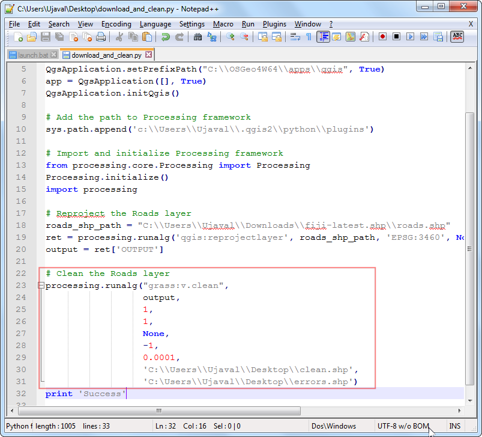

래스터 스타일링과 분석 기초
[ Download PDF A4 Letter ]
수많은 과학적 관찰과 연구가 래스터 데이터셋을 만들어 냅니다. 래스터는 픽셀의 그리드로 각 픽셀들에는 특별한 값이 할당되어 있습니다. 이 값에 대해 수학적인 작업을 통해서 흥미로운 분석을 해낼 수 있습니다. QGIS는 ‘래스터 계산기’가 장착되어 기본적인 분석 능력을 갖추고 있습니다. 이 예제에서는 ‘래스터 계산기’를 사용하여 기본적인 것을 알아볼 것이고 래스터를 스타일링하는 유용한 옵션을 살펴볼 것입니다.
작업 개요
이번 예제에서는 1990년과 2000년 사이에 극적인 세계인구밀도변화가 있는 지역을 볼 수 있도록 인구밀도 그리드 데이터를 사용하여 인구밀도 변화 지역을 찾고 이를 시각화 할 것입니다.
과정
QGIS를 구동시키고 메뉴 레이어 –> 레이터 레이어 추가 :menuselection:`Layer –> Add Raster Layer..`로 가십시오.

다운로드한 압축파일을 찾습니다. 컨트롤키 :kbd:`Ctrl`를 누른채로 두개의 압축파일을 클릭합니다. 이 방법으로 한 번에 두개의 파일을 불러올 수 있습니다. 상황에 따라 두 개의 파일이 선택되지 않을 경우 하나씩 실행하십시오.

각 압출파일에는 2개의 그리드파일이 들어있습니다. 파일명에 있는 ``a``는 인구수가 UN 총합과 맞도록 수정된 것을 시사합니다. 이 예제에서는 수정된 그리드를 사용할 것입니다. ``glds00ag60.asc``를 선택하여 레이어로 불러옵니다. :guilabel:`OK`를 클릭합니다.

레이어는 정의된 CRS를 갖고 있지 않습니다. 그래서 그리드가 위도/경도이므로 좌표체계로 `EPSG:4326`를 선택합니다.

두개의 압축파일을 선택했으므로 유사한 다이알로그를 다시 보게될 것입니다. 과정을 반복하고 ``glds90ag60.asc``를 선택하여 레이어로 불러옵니다.

다시 한번 CRS로 `EPSG:4326`를 선택합니다.

이제 QGIS에 불러들여진 두개의 래스터파일을 보게됩니다. 래스터는 회색스케일로 표현되어 있습니다. 여기서 보다 어두운 픽셀은 낮은 값을, 반면 밝은 픽셀은 보다 높은 값을 나타냅니다.

래스터의 각 픽셀은 지정된 값을 가지고 있습니다. 이 값은 이 그리드의 인구밀도입니다. 도구를 선택하기 위해 객체확인:guilabel:`Identify Features`단추를 클릭하고 래스터의 아무곳이나 클릭하여 픽셀값을 알아봅니다.

인구밀도의 패턴을 보다 낫게 시각화 하기 위해서 이것을 스타일화 할 필요가 있습니다. 레이어에서 마우스의 오른쪽 단추를 클릭하여 속성 :guilabel:`Properties`을 선택합니다. TOC 즉, Table of Contents에서 레이어명을 더블클릭하여 레이어 속성 다이알로그를 열 수도 있습니다.

스타일 Style 탭에서 랜더 유형 Render type 을 단일밴드 의사색채 Singleband pseudocolor`로 변경합니다. 다음 새 색상표 작성 :guilabel:`Generate a new color map`에서 분류 :guilabel:`Classify 를 클릭합니다. 5개의 새로운 색값이 만들어진 것을 볼 수 있습니다. :guilabel:`OK`를 클릭합니다.

QGIS 캔버스로 되돌아 갑니다. 래스터가 열지도 같이 표현된 것을 볼 수 있습니다. 같은 과정을 다른 래스터에 대해 반복합니다.

분석내용은 1990년과 2000년 사이에 가장 인구변화가 큰 곳을 찾는 것입니다. 이것을 수행하기 위한 방법은 두개의 레이어에서 각 그리드 픽셀값 간의 차이를 찾는 것입니다. 메뉴> 래스터 –> 래스터 계산기 :menuselection:`Raster –> Raster calculator`를 선택합니다.

래스터 밴드 Raster bands 에서 레이어를 더블클릭함으로써 레이어를 선택할 수 있습니다. 밴드는 래스터 이름 뒤에 @와 밴드수가 붙습니다. 예제의 래스터는 단지 하나의 밴드만 가지기때문에 래스터마다 1이 붙은 것을 볼 수 있습니다. 래스터 계산기는 래스터 픽셀에 대해 수학적인 계산을 할 수 있습니다. 여기서는 2000년도 인구밀도에서 1990년도 인구밀도를 빼는 간단한 식을 입력합니다. 식 glds00ag60@1 - glds90ag60@1 를 입력합니다. 출력 레이어로 :guilabel:`pop_density_change_2000_1990.tif`를 입력하고 결과를 프로젝트에 추가 :guilabel:`Add result to project`박스를 체크합니다. :guilabel:`OK`를 클릭합니다.

이 과정이 완료되면 QGIS에서 새로운 레이어가 추가된 것을 볼 수 있습니다.

여기서 회색스케일 시각화결과는 매우 유용합니다. 그러나 보다 정보전달력이 높은 결과물을 만들어 낼 수 있습니다. ``pop_density_change_2000_1990``레이어에 대해 마우스 오른쪽 클릭을 하고 속성 :guilabel:`Properties`을 선택합니다.

레이어를 스타일링해야 하므로 어느 정도의 범위의 픽셀값에 대해서는 같은 색을 같도록 해야 합니다. 이 작업을 하기 전에 메타데이터 :guilabel:`Metadata`탭으로 갑니다. 그리고 래스터의 내용을 살펴봅니다. 이 레이어의 최소 및 최대값을 확인합니다.

이제 스타일 Style 탭으로 갑니다. 밴드 랜더링 :guilabel:`Band Rendering`에서 랜더 유형 :guilabel:`Render type`으로 단일밴드 의사색채 :guilabel:`Singleband pseudocolor`를 선택합니다. 색상 보간 :guilabel:`Color interpolation`으로 이산 :guilabel:`Discrete`을 설정합니다. 4개의 독자 계급구간을 만들어 내기 위해 수동으로 값추가 :guilabel:`Add entry`를 4번 클릭합니다. 값을 변경하기 위해 각 엔트리를 클릭합니다. 색상지도는 각 엔트리에 입력되는 값보다 작은 값이 그 엔트리의 색으로 주어집니다. 래스터에서 최소값이 -2000 이상이므로 첫번째 엔트리에 -2000을 입력합니다. 이것은 No Data 즉, 데이터값이 없는 픽셀에 적용됩니다. 다른 엔트리에 대해서도 값과 라벨을 아래와 같이 입력하고 :guilabel:`OK`를 클릭합니다.

이제 인구밀도가 늘어난 지역과 줄어든 지역을 볼 수 있는 강력한 시각화된 지도를 볼 수 있습니다. 확대:guilabel:`Zoom In`단추를 클릭하고 유럽지역에 대해 사각형을 그리면 보다 자세하게 지역을 살펴볼 수 있습니다.

객체 확인 :guilabel:`Identify`도구를 선택하고, 만든 지도가 의도했던대로 스타일이 잘 적용되었는지 확인하기 위해 빨간색 지역과 파란색 지역을 클릭합니다.

이제 한 발 더 나아가 인구밀도가 ‘감소’한 지역만을 찾아봅시다. 메뉴 래스터 –> 래스터 계산기 :menuselection:`Raster –> Raster calculator`를 엽니다.

래스터 연산 표현식에 ``pop_density_change_2000_1990@1 < -10``를 입력합니다. 이 식에 픽셀값이 부합하면 1 그렇지 않으면 0이 할당됩니다. 그래서 인구밀도가 감소한 지역은 픽셀값이 1이 되고 그렇지 않은 지역은 픽셀값이 0이되는 래스터를 얻게됩니다. 출력 레이어의 이름을 ``negative_pop_change_2000_1990``라고 입력하고, 결과를 프로젝트에 추가 :guilabel:`Add result to project`박스를 클릭합니다. OK를 클릭합니다.

일단 새로운 레이어가 불러들여집니다. 마우스 오른쪽 클릭을 한 후에 속성 :guilabel:`Properties`을 선택합니다. 투명도 :guilabel:`Transparency`탭에서 추가적인 no data value :guilabel:`Additional no data value`에 0을 추가합니다. 이러한 세팅은 0의 값을 가진 픽셀 또한 투명하게 만듭니다. :guilabel:`OK`를 클릭합니다.

이제 인구밀도가 감소한 지역을 회색 픽셀로 볼 수 있습니다.